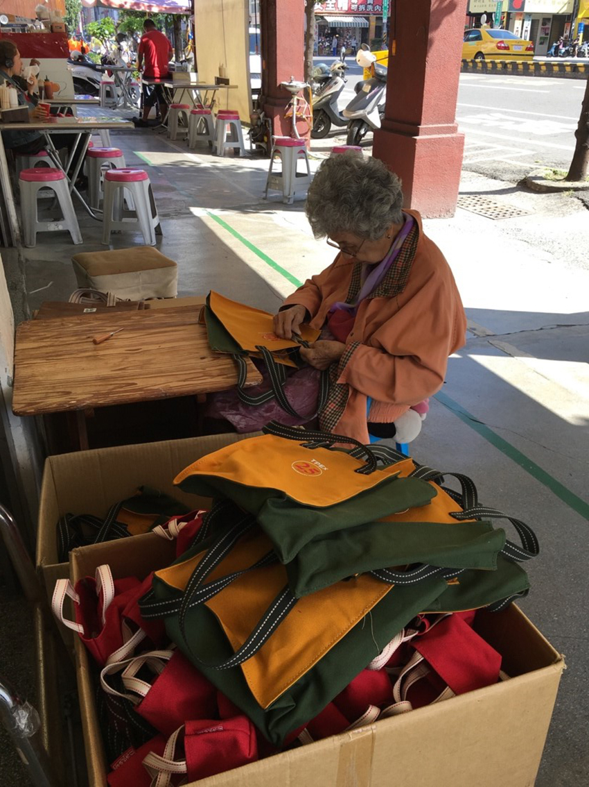

台南輕旅行
徐維德│業務開發處＼業務一部
某次在豔陽高照的台南街頭旅行，偶然間散步經過一家帆布行，最先引起我注意的是坐在門口專注的修整帆布包的老奶奶， 我不由自主地停下腳步，走進店裡看看。
小店的空間不很大，卻擺放了許多的帆布製品，帆布質地厚實、堅硬耐磨，在店主的巧手下被設計成各式各樣實用的產品。當我在店裡參觀的這段時間，除了零星的散客外，甚至還有日本遊客拿著紙條詢問客製化包包的可能，雖然店家委婉的說明目前沒有提供這樣個人化的服務，還是有不少慕名而來的客人。
離開店家後上網查詢才發現這是一家將近一甲子的老店，它曾是嘉南地區最大書包生產商，後來交由第三代接手，從日本回來的女兒為老店增添了年輕的元素，並且應用網站行銷下單，為老店注入新的活水；卻沒料到命運無情的安排，在女兒年輕的生命隕落之後，由第三代的弟弟返家接班，雖然故事很悲傷，但他仍秉持帆布一般堅韌的特性，一步一腳印的努力開創未來。
再次翻看老奶奶坐在門口的照片，雖然她佝僂的背影帶著一層淡淡的悲傷，但她堅忍專注的眼神，就像一旁的帆布包，在時代潮流中歷久不衰，越發燦爛。
|  |